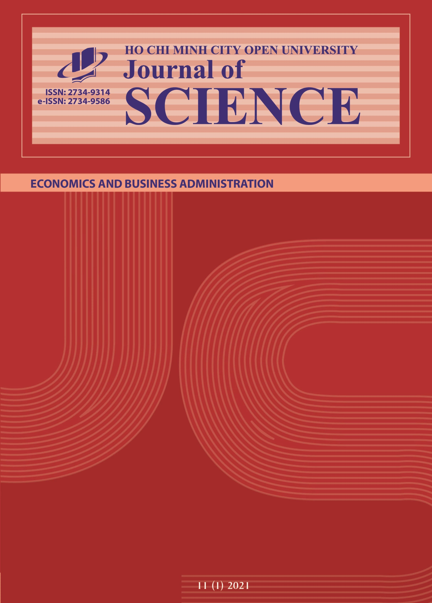
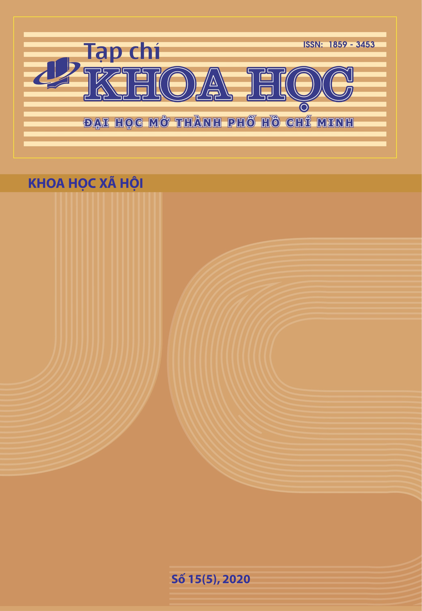

Tạp chí mới

TẠP CHÍ KHOA HỌC
TẠP CHÍ KHOA HỌC
TẠP CHÍ KHOA HỌC
TẠP CHÍ KHOA HỌC

TẠP CHÍ KHOA HỌC
TẠP CHÍ KHOA HỌC
TẠP CHÍ KHOA HỌC
TẠP CHÍ KHOA HỌC
Mục đích - Phạm vi
TẠP CHÍ KHOA HỌC ĐẠI HỌC MỞ THÀNH PHỐ HỒ CHÍ MINH – KHOA HỌC XÃ HỘI (sau đây gọi tắt là Tạp chí) là
tạp
chí học thuật chuyên ngành, có phản biện kín hai chiều và truy cập mở. Tạp chí hoạt động và phát
triển
theo hướng hội nhập và tham gia kết nối với hệ thống dữ liệu quốc gia và quốc tế; các đối tượng độc
giả
chính của Tạp chí là những người làm công tác nghiên cứu trong các lĩnh vực thuộc phạm vi của Tạp
chí.
Tạp chí là nơi công bố các công trình nghiên cứu khoa học hoàn chỉnh bao gồm các lĩnh vực: Giáo dục
học,
Xã hội học - Triết học - Chính trị, Luật học, Ngôn ngữ học, Tâm lý học. Tạp chí khuyến khích các nhà
khoa học công bố các công trình nghiên cứu dựa trên việc sử dụng các phương pháp, công nghệ & kỹ
thuật
mới; các kết quả nghiên cứu có tác động lớn đến các địa phương, quốc gia, quốc tế; đồng thời chào
đón
các nghiên cứu có tính đặc thù về điều kiện kinh tế xã hội & cơ chế quản lý; các lĩnh vực ít được
nghiên
cứu.
Các lĩnh vực cụ thể bao gồm:
- Giáo dục học: Giáo dục học đại cương, Lý luận và phương pháp dạy học bộ môn, Quản lý giáo dục, Giáo dục học chuyên ngành.
- Xã hội học - Triết học - Chính trị: Xã hội học chính trị, Xã hội học quản lý, Xã hội học dân sự, Xã hội học giới và gia đình, Xã hội học phương Tây hiện đại; Logic học, Đạo đức học, Triết học trong khoa học tự nhiên, Triết học xã hội; Triết học văn hóa; Triết học phương Tây; Triết học phương Đông; Chính trị học quốc tế, Chính trị học so sánh, Quan hệ quốc tế, Nhà nước pháp quyền, Chính sách công và quản trị công.
- Luật học: Luật Hiến pháp, Luật Hành chính, Luật Kinh tế, Luật Dân sự, Luật Hình sự, Luật Tố tụng hình sự, Tội phạm học, Luật quốc tế.
- Ngôn ngữ học: Ngôn ngữ học lí thuyết, Ngôn ngữ học ứng dụng, Ngôn ngữ học liên ngành,...
- Tâm lý học: Tâm lý học xã hội, Tâm lý học giáo dục, Tâm lý học quản lý, Tâm lý học nhân cách, Tâm lý học tham vấn, Tâm lý học kinh doanh, Tâm lý học pháp luật, Tâm lý học ngôn ngữ, Công tác xã hội.